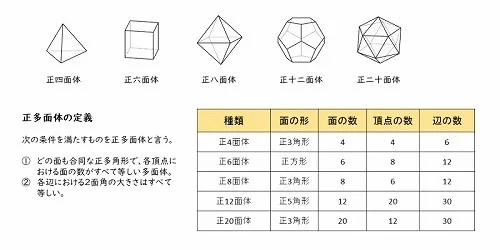

数学とは
数学の範囲と定義については、数学者や哲学者の間で様々な見解がある。
数学の最も普通の定義としては、「数および図形についての学問」というものがある
。 また冒頭では「数・量・図形などに関する」とする、百科事典に掲載されている、研究対象によって数学を定義する定義文を紹介した。 なお「など」という言葉によってどのような要素が省略されているか、他にどのようなことを研究するか、というところまで説明を補うと、量（数）、構造、空間、変化など、
さまざまなものが続々と出てくる。
オイラーの多面体定理
